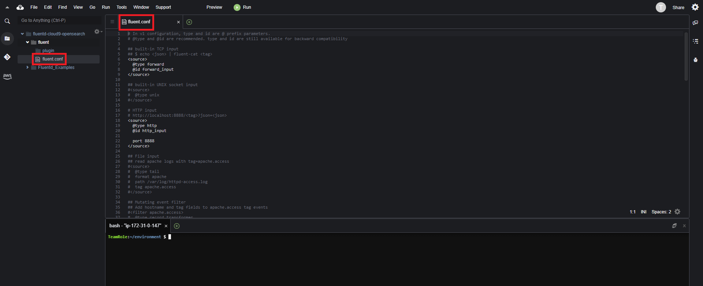
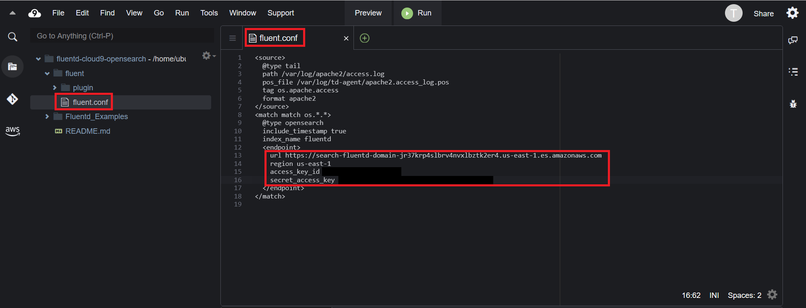
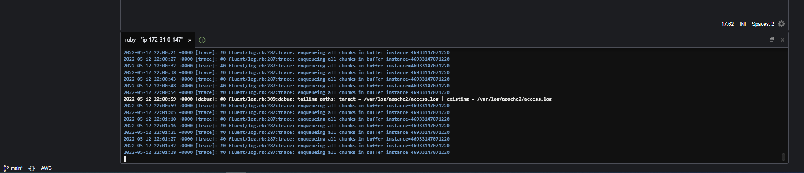
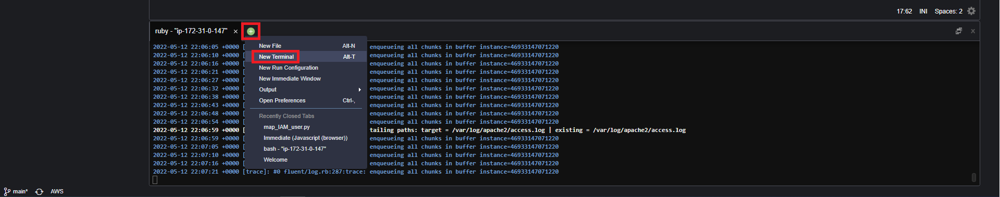
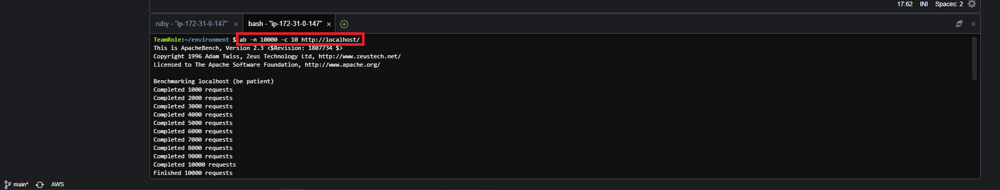

3. Configure Fluentd
Step 1 - Install Fluentd
You need to install Fluentd in the Cloud9 environment. The Cloud9 environment is based on an Ubuntu linux EC2 machine. you will follow the instructions for installing Fluentd on Ubuntu
In the Cloud9 terminal execute the following commands
gem install fluentd --no-docgem install fluent-plugin-opensearch

Step 2 - Setup Fluentd
After installing Fluentd to create a new project execute the following command on the Cloud9 terminal
fluentd --setup ./fluent
This will create a new folder in Cloud9 with a fluent.conf file. you will edit the fluent.conf file to configure Fluentd
- Open the flunt.conf file in Cloud9

- Delete all of the code in the file and replace it with the code below
<source>
@type tail
path /var/log/apache2/access.log
pos_file /var/log/td-agent/apache2.access_log.pos
tag os.apache.access
format apache2
</source>
<match match os.*.*>
@type opensearch
include_timestamp true
index_name fluentd
<endpoint>
url <opensearch_domain_endpoint>
region <aws_region>
access_key_id <your_aws_id>
secret_access_key <your_aws_security_key>
</endpoint>
</match>
Edit to the new fluent.conf file replace the following
- Replace <opensearch_domain_endpoint> with the value of the OSDomainURL key from the CloudFormation stack outputs
- Replace <aws_region> with the value of the Region key from the CloudFormation stack outputs
- Replace <your_aws_id> with the value of the AccessKeyId key from the CloudFormation stack outputs
- Replace <your_aws_security_key> with the value of the SecretAccessKey key from the CloudFormation stack outputs

- Save the fluent.conf file
Step 3 - Run Fluentd
Now that you have installed and configured Fluentd (via. updating the fluent.conf file) it is time to run Fluentd. To run Fluentd
Before you can run Fluentd you need to open permissions on two folders within the EC2 instance the Cloud9 runs on. Run the following commands in the Cloud9 terminal
sudo mkdir /var/log/apache2/sudo chmod 777 /var/log/apache2/sudo mkdir /var/log/td-agent/sudo chmod 777 /var/log/td-agent/
Note: you may get a ‘cannot create directory: file exists error’. If this occurs, you can ignore and continue
You can now start Fluntd by running the following command in the Cloud9 console
fluentd -c ./fluent/fluent.conf -vv
The -vv flag enables verbose logging. This allows us to more easily keep track on Fluentd’s actions.

Step 4 - Create Sample Apache Log
Fluentd is watching the access.log file. By default this file has no log data for Fluentd to parse and send to OpenSearch.
To generate sample log data for Fluentd to process
- Open a new terminal window in Cloud9 by clicking on the plus symbol next to the current terminal and selecting New Terminal

- In the new terminal execute the following command
ab -n 10000 -c 10 http://localhost/
Running this command will generate 10000 sample logs in the access.log file Fluentd is monitoring

Fluentd will recognize the new entries have been added to the access.log file and will parse, send the log data to OpenSearch.
You can now move on the next step Search Log to view and search the logs Fluentd sent to OpenSearch.